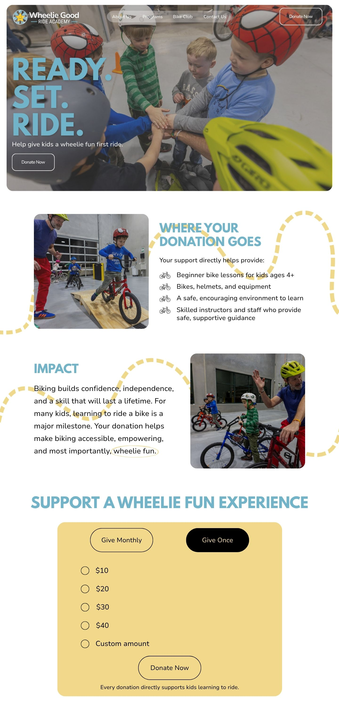

Wheelie Good Ride Academy
A nonprofit campaign created to raise awareness and encourage donations for a Lincoln organization that helps kids and beginners learn to ride.
About the Nonprofit
Wheelie Good Ride Academy helps make biking fun, accessible, and empowering for families in Lincoln. The organization teaches bike riding classes for ages 4 and up, and also supports the biking community through a bike shop and bike club.
Campaign Goal
Raise awareness around donations and encourage people to support kids learning to ride.
Target Audience
Parents with children ages 4 and up and Lincoln families who value confidence, outdoor activity, and accessible community programs.
Focus
The campaign centers on the “I did it” moment; the confidence and joy kids feel when they learn to ride a bike.
Social Media Ads
Landing Page

Project Note
This was a group campaign, but the work shown on this page was completed individually by me.